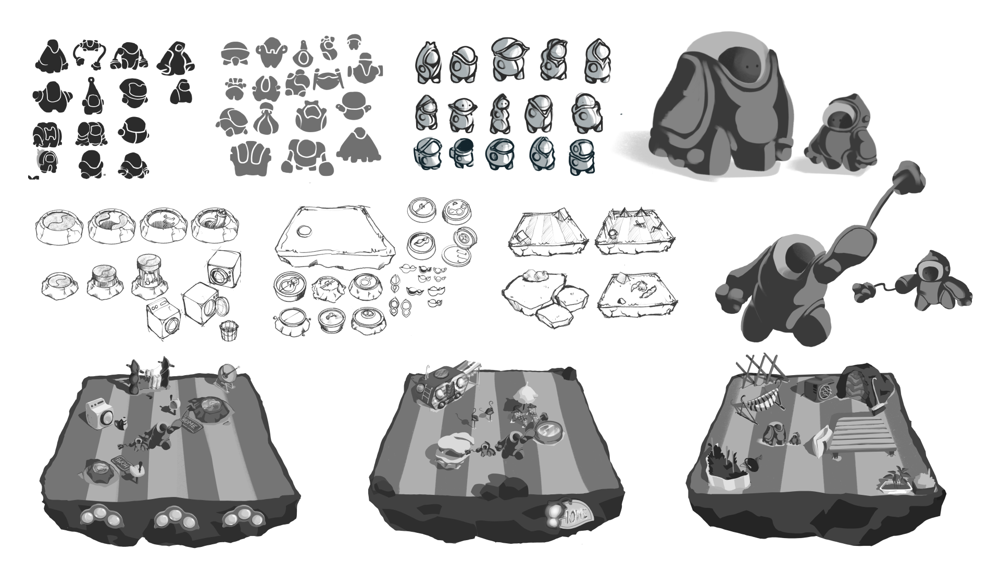
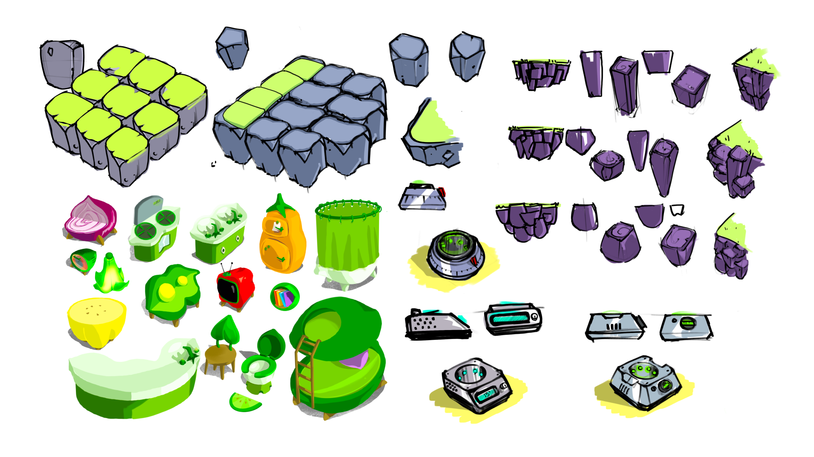
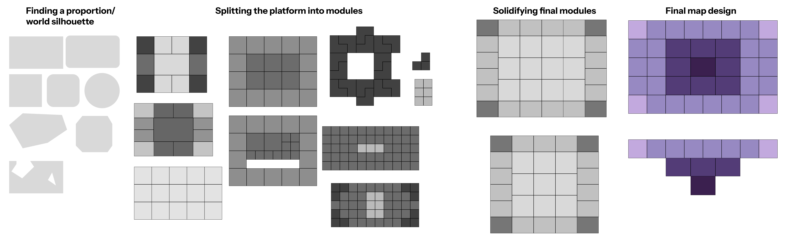
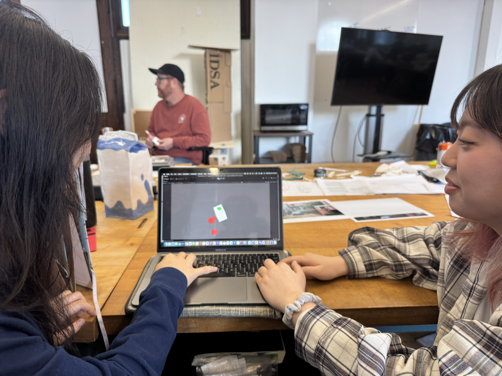

Why we did it
A game about friends for friends.
Amidst large social transitions, couch party games have always been a way we reconnected with our old friends or served as grounds to make new ones. We wanted to make a game for our friends now to hopefully play with each other in the future
Core Gameplay
How long can you last?
This led to our primarily game mechanic – A dynamic balancing game where the platform tilts in real time based on the position and weight of everything on it. Players have to work together to literally keep their world balanced and together.

Crafting a Narrative
Save your home from a cosmic vegetable shower.
We were drawn to this idea of hotpot, an unpredictable shared meal that is constantly changing from what people put in. This led us to our characters Jumbo and Peawee, two inseprable underground friends who have been living on a floating rock for some time, but must face a medley of delicious cosmic events and have no renters insurance to cover the damage!
Concept Development
Two inseperable peas in a space pod.
We wanted to lean into this “peas in a pod” motiff with both our characters and our environment, sketching space suits and props that made this floating rock feel like a front-lawn.


Since the game revolves around weight and balance, we designed a large-and-small character duo with unique abilities: Jumbo uses a forcefield to block falling objects, while Peawee zips around with a jetpack to grab key items.

Level Design
Integrating the world with gameplay.
I began iterating on different maps/modules and how they effect gameplay, ultimately landing on a simple rectangular plane with smaller pieces towards the edges and larger platforms towards the center.


From there, I led the prototyping process. I wanted to get the main mechanic of a tilting platform that was made up of smaller platforms, and how it can respond to players moving on top of it.
Gameplay Refinement
Prototyping and playtesting
Through early prototyping and playtesting with friends, we identified key improvements to make the gameplay more fun and intuitive.
1. Game was too slow:
We needed to implement more gradual difficulty barriers and variety that made the game less predictable and more urgent.

2. People got competitive:
Especially towards the end of the game where it was a single platform left, people wanted to just push each other off. There was no call for cooperative gameplay yet.
3. I don’t “have” to do anything:
Players were avoiding objects in fear of getting squashed, but they weren’t making an effort to push off these objects as we envisioned. We needed to make players’ decisions and actions have consequences throughout the game.
Gameplay Refinement
Implementation and feature development.
From there, we went to different storyboards for new features that could address each issue, and then implementing it into the final gameplay.
1. Gradual difficulty:
Started a wave based gameplay for variable obstacles, music progression correlating to the amount of platform left, and adding a dash feature on characters.
2. Adding a reward system:
Now, players have a joined goal to collect falling "power pellets" that will recenter the world amidsdt a wave.
3. Exploding objects:
We added a laser beam wave which, when it hits a tofu that was left from wave 1, will cause it to explode and its shrapnel can trigger platforms to fall.
Technical Art
Building a visual language.

VFX design
I designed all VFX to match the game’s hand-drawn feel — using thick outlines and solid shading to reinforce a playful, color-book aesthetic.
3D design
I went for a very charming low poly approach, focusing on larger, distinguishable silhouettes for all objects. The platform islands were inspired by soup bouillon cubes getting dissolved in hot water.
Texturing
I went for a 3-tone texturing style to complement the animated nature of my assets. I added hand-drawn elements to interactable objects to make them stand out and add visual variety where players focus most.
Playtesting
Collecting data and feedback.
We're currently testing the game with a broader audience for identifying bugs and new features before shipping. If you're interested in this process, please feel free to reach out!